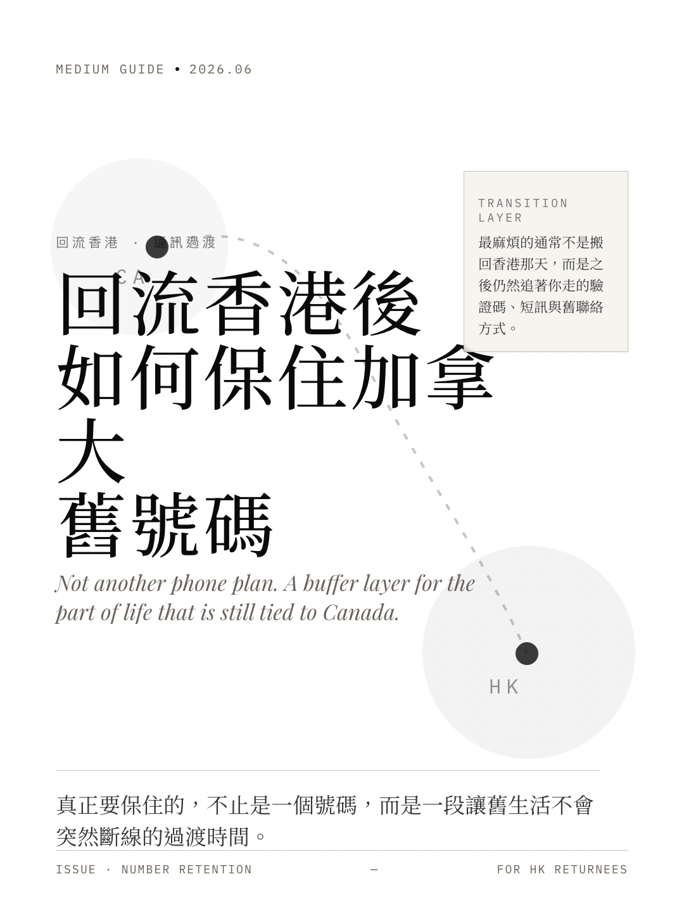
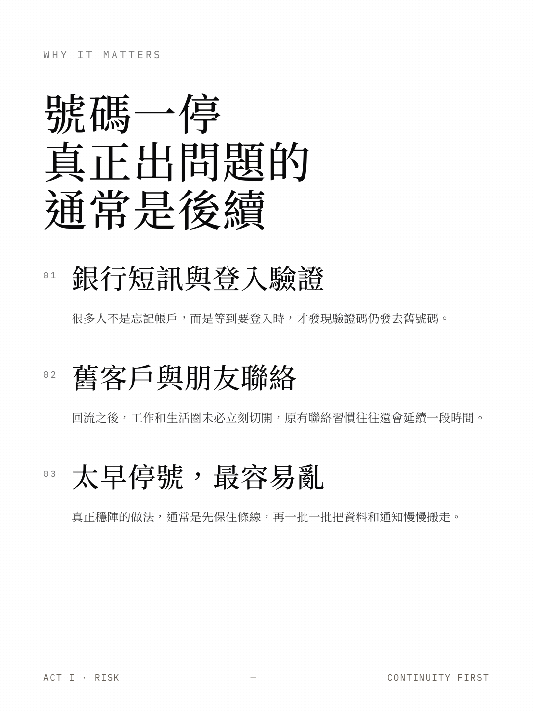
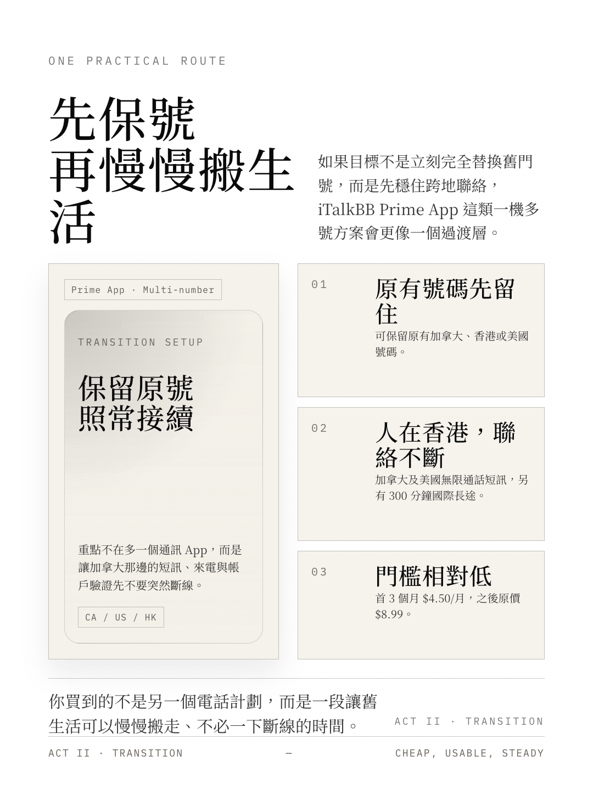

回流香港後，如何保住原本的加拿大電話號碼
A transition guide for returnees who still need their old line alive.

對很多回流人士而言，最難處理的不是搬家，而是那些仍然綁在舊號碼上的聯絡與帳戶。
很多人以為回流香港，最麻煩的是住屋、工作、孩子上學，或者重新適應生活節奏。
但真正開始處理時，你很快會發現，原來最容易被忽略、卻最影響日常的，是電話號碼。
加拿大那邊的銀行短訊、登入驗證碼、舊客戶聯絡、朋友來電，甚至一些你已經忘記了的帳戶，往往仍然綁在你原本的加拿大號碼之上。
如果太早停掉，生活不一定立即出問題，但很多細節會在之後一段時間慢慢浮出來。

因此，對回流香港的人來說，「保號」其實不是小事，而是一段過渡期的基本安排。
以 iTalkBB Prime App 為例，根據目前官方資料，這類服務主打一機多號，可保留原有加拿大、香港或美國號碼，並支援免費攜號轉台；同時提供加拿大及美國無限通話與短訊、每月300分鐘國際長途，亦可接收香港短訊及驗證碼。

對剛回流香港、但仍需要維持加拿大聯絡方式的人來說，這類方案更像是一個過渡層，而不只是另一個電話計劃。
如果你想直接看看 iTalkBB Prime App 目前的官方方案、價格與功能，
可以到
iTalkBB Prime App 官方產品頁
了解更多。
Based on current official product information for iTalkBB Prime App at time of drafting.